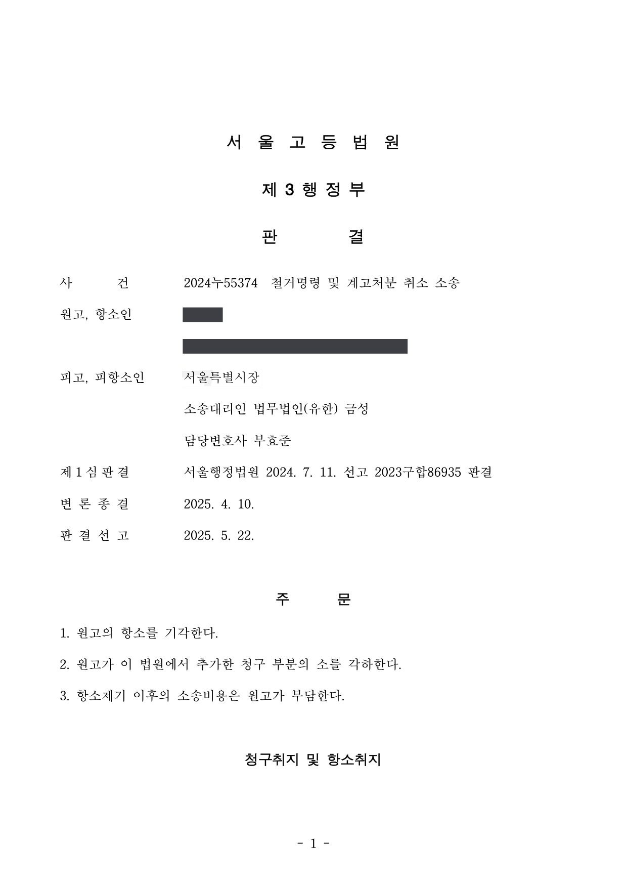
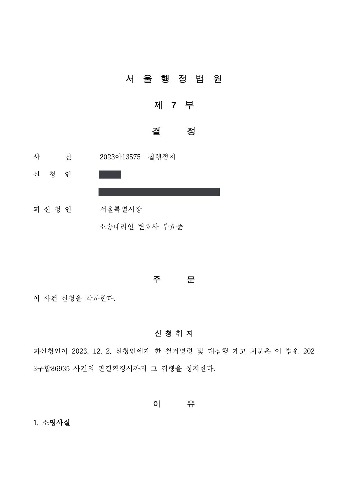

하천구역 점용물 철거명령·대집행 계고처분 무효확인·취소소송 (1·2심, 집행정지)
서울행정법원 2023구합86935 · 서울고등법원 2024누55374 · 서울행정법원 2023아13575 · 담당변호사 부효준
판결문



사건의 요지
하천구역 안에 설치된 점용물에 대한 철거명령과 대집행 계고처분에 관하여 「하천법」상 점용허가의 범위와 처분의 절차·요건이 다투어진 사건입니다. 집행정지 신청은 각하되었습니다.
사건의 주요 내용
원고는 시민 모임을 이끌면서 하천법 제33조 제1항 제1호에 따른 하천구역 안 토지점용허가를 받지 않은 채 하천구역 안 공원에 추모공간을 마련하고, 그곳에 사진·화분 등 물건을 두어 관리해 왔습니다. 2023년 12월 초 이 추모공간 앞에는 '추모 등을 위한 각종 동산(피켓, 사진, 화분 등 모든 물건)의 소유자는 정해진 기간(2023년 12월 20일)까지 자진철거하기 바라며, 그 기간까지 조치가 없는 경우 하천법 제33조 및 제69조에 의거하여 하천관리청에서 조치할 예정'이라는 내용의 현수막이 지방자치단체 소속 부서 명의로 게시되었습니다.
원고는 이 현수막 게시가 실질적으로 추모공간의 철거를 강제하는 철거명령·대집행 계고처분에 해당한다고 보아, 주위적으로 그 무효확인을, 예비적으로 취소를 구하는 소를 제기하고 집행정지도 신청하였습니다. 부효준 변호사는 하천관리청인 시·도지사(처분청)를 대리하였습니다.
1심은 2024년 7월 현수막 게시가 항고소송의 대상인 처분이 아니라고 보아 소를 모두 각하하였고, 같은 날 집행정지 신청도 같은 이유로 각하되었습니다. 원고는 항소하면서 2023년 12월 말 담당 공무원이 구두로 하였다는 시정명령(적치물·사진·게시판 철거, 추모공간 축소)과 게시판 제거행위의 무효확인 청구를 추가하였으나, 항소심은 2025년 5월 항소를 받아들이지 않고 추가된 청구의 소도 각하하였습니다.
쟁점
- 하천구역 안 점용물의 자진철거를 권유하고 조치가 없으면 하천법에 따라 조치할 예정이라고 알린 현수막 게시가 항고소송의 대상인 철거명령·대집행 계고처분에 해당하는지
- 상대방이 게시에 심리적 압박을 느껴 스스로 점용물을 줄였다는 사정이 게시의 처분성을 인정할 근거가 되는지
- 본안 소송이 부적법한 경우 그 처분의 집행정지 신청이 적법한지
원고의 주장
- 현수막 게시는 실질적으로 추모공간의 철거를 강제하는 불이익한 처분인데, 처분청이 원고에게 개별적으로 통지하거나 적법한 송달 절차를 거치지 않고 현수막만으로 그 내용을 알린 절차적 하자가 있다고 주장하였습니다.
- 추모공간에 있는 물건의 소유자를 구분하지 않고 다른 대안을 고려·제시하지 않은 채 전면 철거를 명하여 표현의 자유와 집회의 자유를 과도하게 침해하였으므로, 비례원칙에 반하여 재량권을 일탈·남용한 위법이 있다고 주장하였습니다.
- 현수막 게시에 따라 추모공간이 전면 철거될 수 있다는 위협을 느껴 스스로 그 규모를 상당 부분 줄이는 조치를 하였으므로, 게시는 표현의 자유에 직접 영향을 미치는 불이익한 처분이라고 주장하였고, 항소심에서는 구두 시정명령과 게시판 제거행위도 문서로 고지되지 않은 절차상 하자와 비례원칙 위반으로 무효라고 추가로 주장하였습니다.
부효준 변호사의 주장
- 현수막 게시는 추모공간의 자진철거를 안내·권유하고 향후 하천법에 따른 제재처분이 이루어질 수 있음을 알린 것에 불과하여, 국민의 권리·의무에 직접 변동을 일으키는 항고소송의 대상인 행정처분이 아니라는 본안전 항변을 하였습니다.
- 현수막에 표시된 부서는 하천법상 처분권자인 하천관리청이 아니라 현수막의 설치·관리 주체에 불과하고, 현수막에 적힌 하천법 조항도 게시 자체의 근거가 아니라 위반행위가 계속될 경우 이루어질 수 있는 제재조치의 근거조항일 뿐이어서 행정처분으로서의 성립요건을 갖추지 못하였다는 점을 밝혔습니다.
- 항소심에서 원고가 추가로 다툰 구두 시정명령과 게시판 제거행위는 그 존재를 인정할 증거가 없으므로, 존재하지 않는 처분에 대한 무효확인 청구로서 부적법하다고 주장하였습니다.
법원의 판단
법원은 항고소송의 대상이 되는 처분은 국민의 구체적 권리·의무에 직접 변동을 초래하는 행위이고 알선·권유·사실상의 통지처럼 법률상 지위에 직접 변동을 일으키지 않는 행위는 그 대상이 될 수 없으며(대법원 2019. 2. 14. 선고 2016두41729 판결), 처분성은 관련 법령의 내용과 취지, 행위의 주체·내용·형식·절차, 불이익과의 실질적 견련성, 행정청이나 이해관계인의 태도 등을 고려하여 개별적으로 결정한다(대법원 2010. 11. 18. 선고 2008두167 전원합의체 판결)는 법리를 전제로 하였습니다.
그 위에서 법원은, 현수막에는 자발적 철거를 권유하는 내용만 있을 뿐 직접·강제적으로 명하는 내용이 없고, '조치가 없으면 하천법에 따라 하천관리청이 조치할 예정'이라는 문구도 향후 처분이 있을 수 있음을 안내한 것에 불과하며, 현수막에 표시된 부서는 처분권자인 하천관리청이 아니고, 권고에 따르지 않는다는 이유만으로 제재할 법적 근거도 없다고 보았습니다. 원고가 심리적 압박을 느껴 추모공간을 줄인 것은 사실적·간접적 효과이거나 자발적 선택이고, 게시 뒤에도 처분청이 곧바로 제재에 나서지 않고 간담회 등 의견수렴을 거쳐 규모·운영 방법을 상의한 점에 비추어 게시는 시정 권유의 일부일 뿐이라고 하였습니다.
장래에 하천법 제69조 제1항 제1호에 따른 물건 이전·제거명령 등 제재처분이 있으면 그 처분에 대한 취소소송으로 권리구제를 받을 수 있으므로 게시의 처분성을 인정할 필요도 없다고 보아 주위적·예비적 소를 모두 각하하였고, 집행정지 신청은 적법한 본안 소송의 계속이라는 요건을 갖추지 못하였다는 이유로 각하되었습니다. 항소심은 1심 판결의 이유를 그대로 인용하여 항소를 받아들이지 않고, 추가된 구두 시정명령·게시판 제거행위의 무효확인 청구는 원고가 제출한 증거만으로 그러한 처분이 있었다고 인정하기 부족하다며 각하하였습니다.
항고소송의 대상이 되는 행정처분이란 행정청의 공법상 행위로서 특정사항에 대하여 법규에 의한 권리의 설정 또는 의무의 부담을 명하며 기타 법률상 효과를 발생하게 하는 등 국민의 구체적 권리의무에 직접적 변동을 초래하는 행위를 말하고, 행정청 내부에서의 행위나 알선, 권유, 사실상의 통지 등과 같이 상대방 또는 기타 관계자들의 법률상 지위에 직접적인 법률적 변동을 일으키지 아니하는 행위는 항고소송의 대상이 될 수 없다(대법원 2019. 2. 14. 선고 2016두41729 판결). 나아가 행정청의 행위가 항고소송의 대상이 될 수 있는지는 추상적·일반적으로 결정할 수 없고, 구체적인 경우에 관련 법령의 내용과 취지, 행위의 주체·내용·형식·절차, 행위와 상대방 등 이해관계인이 입는 불이익 사이의 실질적 견련성, 법치행정의 원리와 행정청이나 이해관계인의 태도 등을 고려하여 개별적으로 결정해야 한다(대법원 2010. 11. 18. 선고 2008두167 전원합의체 판결 등 참조).
서울행정법원 2023구합86935 판결 이유 '4. 나. 1) 관련 법리' 부분(항소심이 그대로 인용)
그런데 이 사건 현수막에는 자발적인 철거 조치를 권유하는 내용이 기재되어 있을 뿐이고, 그와 같은 조치를 직접적, 강제적으로 명하는 내용은 없다. 나아가 이 사건 현수막에는 ‘해당 기간까지 조치가 없는 경우 하천법 제33조 및 제69조에 의거 하천관리청에서 조치할 예정이다’라는 내용이 기재되어 있는데, 이는 자진철거가 이루어지지 않을 경우 향후 하천법에 따른 행정처분이 실제로 이루어질 수 있음을 안내 내지 통지하는 내용에 불과할 뿐, 그 자체로 토지 무단점용에 대한 어떠한 제재처분을 한 것도 아니다.
서울행정법원 2023구합86935 판결 이유 '4. 나. 2) 구체적 판단 나)' 부분
결국 이 사건 게시는 상대방의 임의적인 협력을 얻어 행정목적을 달성하려는 것이고, 달리 이 사건 게시를 따르지 않는다는 이유만으로 피고가 상대방에게 제재를 가할 수 있는 법적 근거도 없다(하천법 제69조 제1항에 따른 제재처분은 하천구역의 무단 점용행위 자체를 요건으로 할 뿐 이 사건 게시와 같은 행정청의 권고에 대한 불응을 요건으로 삼고 있지 않다).
서울행정법원 2023구합86935 판결 이유 '4. 나. 2) 구체적 판단 라)' 부분
※ 판결 이유 가운데 이 사건의 판단 기준이 된 부분을 그대로 옮긴 것으로, 당사자 이름 등은 가렸습니다.
이 사건이 보여 주는 것
행정청이 현수막이나 공문으로 '자진 철거하기 바라며, 하지 않으면 법에 따라 조치할 예정'이라고 알리는 것은 상대방의 임의적 협력을 구하는 권고일 뿐, 그 자체로 철거명령이나 대집행 계고처분이 아닙니다. 이런 안내를 처분으로 보아 취소소송이나 집행정지를 신청하면 본안 판단 없이 각하되므로, 다투려면 하천법 제69조에 따른 이전·제거명령 등 실제 처분이 내려진 뒤 그 처분을 대상으로 하여야 합니다.
행정청 입장에서는, 제재처분에 앞서 자진 시정을 권유하고 간담회 등으로 의견을 수렴한 경과가 '권고'에 불과하다는 판단을 뒷받침하였다는 점에서, 하천·공원 같은 공공공간의 무단 점용 사안을 단계적으로 처리하는 방식의 의미를 보여 주는 사례입니다.
비슷한 처분을 받으셨다면
행정처분은 처분이 있음을 안 날부터 90일 이내에 행정심판이나 취소소송으로 다투어야 하고, 기간이 지나면 돌이킬 수 없는 처분은 집행정지를 서둘러야 합니다. 처분서를 받은 날짜부터 확인해 드립니다.